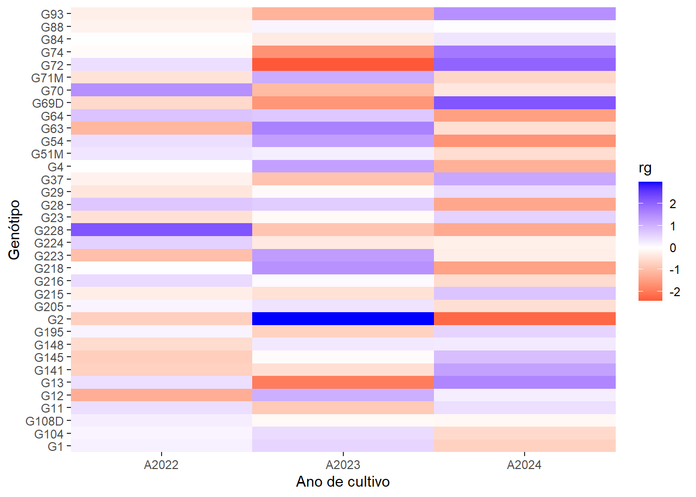
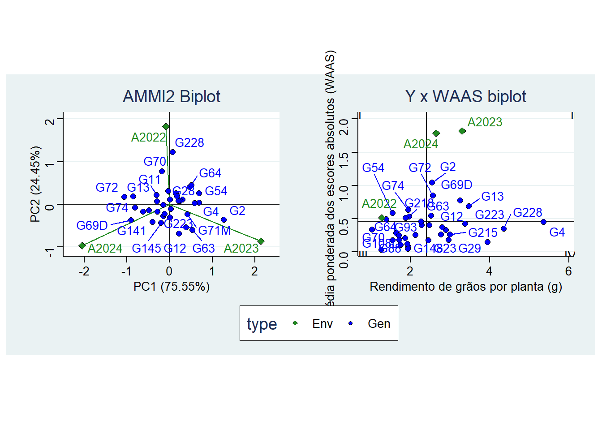
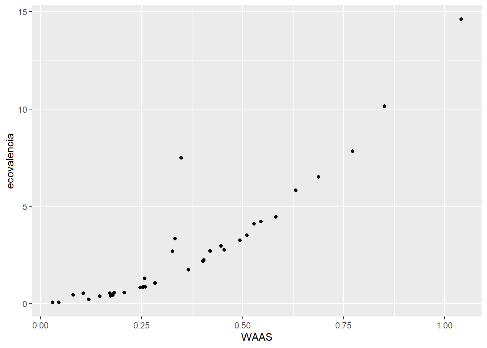

library(rio)
library(tidyverse)
library(metan)
library(ggridges)
library(ggthemes)
library(patchwork)
df <- import_list("data/progresso.xlsx")
g2022 <- df$`2022` |> select(GEN, RGPLA) |> rename(A2022 = RGPLA)
g2023 <- df$`2023` |> select(GEN, RGPLA) |> rename(A2023 = RGPLA)
g2024 <- df$`2024` |> select(GEN, RGPLA) |> rename(A2024 = RGPLA)
dfge <-
reduce(list(g2024, g2023, g2022), left_join) |>
remove_rows_na()
df_ggplot <-
dfge |>
pivot_longer(-GEN, names_to = "AMB", values_to = "RGPLA")03: Adaptabilidade e estabilidade de genótipos experimentais de linhaça cultivados em ambientes contrastantes de Santa Catarina
1 Pacotes
2 Interação genótipo ambiente
\[ y_{ij} = m + g_i + a_j + (ga)_{ij} \]
\[ \hat{g_i} = \bar{g_i} - m \\ \hat{a_j} = \bar{a_j} - m \] \[ \hat{(ga)_{ij}} = y_{ij} - m - \hat{g_i} - \hat{a_j} \\ \hat{(ga)_{ij}} = y_{ij} - \bar{g_i} - \bar{a_j} + m \]
matga <- dfge |> column_to_rownames("GEN") |> as.matrix()
m <- mean(matga)
# ESTIMANDO O EFEITO DA INTERAÇÃO
mat_ef <- matrix(NA, ncol = ncol(matga), nrow = nrow(matga))
for(i in 1:nrow(matga)){
egi <- mean(matga[i, ]) - m
for(j in 1:ncol(matga)){
eaj <- mean(matga[, j]) - m
mat_ef[i, j] <- matga[i, j] - m - egi - eaj
}
}
colnames(mat_ef) <- colnames(matga)
rownames(mat_ef) <- rownames(matga)
# criar um mapa de calor
dfggp <-
mat_ef |>
as.data.frame() |>
tibble::rownames_to_column("gen") |>
pivot_longer(-gen, names_to = "amb", values_to = "rg")
# phm <-
ggplot(dfggp, aes(amb, gen, fill = rg))+
geom_tile() +
scale_fill_gradient2(low = "red", high = "blue") +
scale_x_discrete(expand = expansion(0)) +
scale_y_discrete(expand = expansion(0)) +
labs(x = "Ano de cultivo",
y = "Genótipo")
# ggsave("figs/heatmap.jpg",
# width = 4,
# height = 6)3 Adaptabilidade
mod <- waas_means(df_ggplot, AMB, GEN, RGPLA)
## Evaluating trait RGPLA |=========================================| 100% 00:00:00
p1 <-
plot_scores(mod, type = 2) +
theme_stata() +
coord_equal()
p2 <-
plot_scores(mod, type = 3) +
theme_stata() +
labs(x = "Rendimento de grãos por planta (g)",
y = "Média ponderada dos escores absolutos (WAAS)")
p1 + p2 +
plot_layout(guides = "collect") & theme(legend.position = "bottom")
# ggsave("figs/waas_biplot.jpg",
# width = 13,
# height = 6)4 Estabilidade
4.1 Método Wricke
WRICKE, G. Zur Berechnung der Ökovalenz bei Sommerweizen und Hafer. Zeitschrift für Pflanzenzüchtung, v.52, p.127-138, 1965.
ecovalencia <-
apply(mat_ef, 1, function(x){
sum(x^2)
})
eco <- data.frame(ecovalencia) |> rownames_to_column("GEN")4.2 Método WAAS
OLIVOTO, T. et al. Mean Performance and Stability in Multi‐Environment Trials I: Combining Features of AMMI and BLUP Techniques. Agronomy Journal, v. 111, n. 6, p. 2949–2960, 2019.
waas_vals <-
get_model_data(mod) |>
rename(WAAS = RGPLA)
stabs <- left_join(waas_vals, eco)
ggplot(stabs, aes(WAAS, ecovalencia)) +
geom_point()
cor(stabs$WAAS, stabs$ecovalencia)
## [1] 0.91602855 Section info
sessionInfo()
## R version 4.4.2 (2024-10-31 ucrt)
## Platform: x86_64-w64-mingw32/x64
## Running under: Windows 11 x64 (build 26100)
##
## Matrix products: default
##
##
## locale:
## [1] LC_COLLATE=Portuguese_Brazil.utf8 LC_CTYPE=Portuguese_Brazil.utf8
## [3] LC_MONETARY=Portuguese_Brazil.utf8 LC_NUMERIC=C
## [5] LC_TIME=Portuguese_Brazil.utf8
##
## time zone: America/Sao_Paulo
## tzcode source: internal
##
## attached base packages:
## [1] stats graphics grDevices utils datasets methods base
##
## other attached packages:
## [1] patchwork_1.3.0 ggthemes_5.1.0 ggridges_0.5.6 metan_1.19.0
## [5] lubridate_1.9.4 forcats_1.0.0 stringr_1.5.1 dplyr_1.1.4
## [9] purrr_1.0.2 readr_2.1.5 tidyr_1.3.1 tibble_3.2.1
## [13] ggplot2_3.5.1 tidyverse_2.0.0 rio_1.2.3
##
## loaded via a namespace (and not attached):
## [1] gtable_0.3.6 xfun_0.50 htmlwidgets_1.6.4
## [4] ggrepel_0.9.6 GGally_2.2.1 lattice_0.22-6
## [7] numDeriv_2016.8-1.1 mathjaxr_1.6-0 tzdb_0.5.0
## [10] Rdpack_2.6.2 vctrs_0.6.5 tools_4.4.2
## [13] generics_0.1.3 R.oo_1.27.0 pkgconfig_2.0.3
## [16] Matrix_1.7-1 RColorBrewer_1.1-3 readxl_1.4.3
## [19] lifecycle_1.0.4 compiler_4.4.2 farver_2.1.2
## [22] munsell_0.5.1 ggforce_0.4.2 lmerTest_3.1-3
## [25] htmltools_0.5.8.1 yaml_2.3.10 pillar_1.10.1
## [28] nloptr_2.1.1 R.utils_2.12.3 MASS_7.3-61
## [31] reformulas_0.4.0 boot_1.3-31 nlme_3.1-166
## [34] ggstats_0.8.0 tidyselect_1.2.1 digest_0.6.37
## [37] stringi_1.8.4 labeling_0.4.3 splines_4.4.2
## [40] polyclip_1.10-7 fastmap_1.2.0 grid_4.4.2
## [43] colorspace_2.1-1 cli_3.6.4 magrittr_2.0.3
## [46] withr_3.0.2 scales_1.3.0 timechange_0.3.0
## [49] rmarkdown_2.29 lme4_1.1-36 cellranger_1.1.0
## [52] R.methodsS3_1.8.2 hms_1.1.3 evaluate_1.0.3
## [55] knitr_1.49 rbibutils_2.3 rlang_1.1.5
## [58] Rcpp_1.0.14 glue_1.8.0 tweenr_2.0.3
## [61] rstudioapi_0.17.1 minqa_1.2.8 jsonlite_1.9.1
## [64] R6_2.6.1 plyr_1.8.9